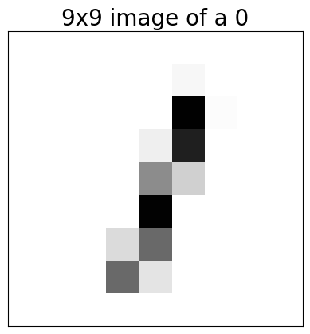
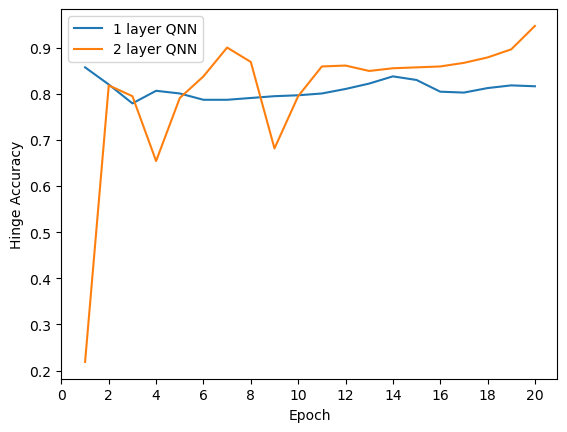

import pennylane as qml
from matplotlib import pyplot as plt
import numpy
import jax.numpy as np
import jax
import optax
import tensorflow_datasets as tfds
# np.set_printoptions(legacy="1.25") # Fix annoying printing of numpy types
import tensorflow as tf
---------------------------------------------------------------------------
ModuleNotFoundError Traceback (most recent call last)
Cell In[1], line 1
----> 1 import pennylane as qml
3 from matplotlib import pyplot as plt
5 import numpy
ModuleNotFoundError: No module named 'pennylane'
Load and reduce the data#
Load the MNIST data and check number of training and test examples
data_train, data_test = tfds.load('mnist', split=['train', 'test'], as_supervised=True)
# convert data_train to numpy array where first index specifies the image number
def convert_to_numpy(data):
images = []
labels = []
for image, label in tfds.as_numpy(data):
images.append(image/255.0) # normalize to [0, 1]
labels.append(label)
return np.array(images), np.array(labels)
x_train, y_train = convert_to_numpy(data_train)
x_test, y_test = convert_to_numpy(data_test)
print("Number of original training examples:", len(x_train))
print("Number of original test examples:", len(x_test))
Number of original training examples: 60000
Number of original test examples: 10000
Create a function to filter out only 0 and 1
def filter_01(x, y):
keep = (y == 0) | (y == 1)
x, y = x[keep], y[keep]
y = y == 0
y = y.astype(int) # convert bool to int
return x,y
x_train, y_train = filter_01(x_train, y_train)
x_test, y_test = filter_01(x_test, y_test)
print("Number of filtered training examples:", len(x_train))
print("Number of filtered test examples:", len(x_test))
Number of filtered training examples: 12665
Number of filtered test examples: 2115
Plot the original images
plt.imshow(x_train[0, :, :, 0], cmap='Greys')
ax = plt.gca()
ax.set_xticks([])
ax.set_yticks([])
plt.title(f"28x28 image of a {y_train[0]}", fontsize=20)
# save to file as pdf
plt.savefig('28x28_MNIST_0.pdf', bbox_inches='tight', pad_inches=0)
plt.show()

Reduce images to 9x9
x_train_small = tf.image.resize(x_train, (9,9)).numpy()
x_test_small = tf.image.resize(x_test, (9,9)).numpy()
plt.imshow(x_train_small[0,:,:,0], vmin=0, vmax=1, cmap='Greys')
ax = plt.gca()
ax.set_xticks([])
ax.set_yticks([])
plt.title(f"9x9 image of a {y_train[0]}", fontsize=20)
# save to file as pdf
plt.savefig('9x9_MNIST_0.pdf', bbox_inches='tight', pad_inches=0)
plt.show()

Further reduce images to 9x1
x_train_small = x_train_small[:,4,:,:].reshape((-1,9)) # take only central slices
x_test_small = x_test_small[:,4,:,:].reshape((-1,9)) # take only central slices
print(f"shape = {x_train_small.shape}")
plt.imshow(x_train_small[0,:].reshape((1,-1)), vmin=0, vmax=1, cmap='Greys')
ax = plt.gca()
ax.set_xticks([])
ax.set_yticks([])
plt.title(f"9x1 image of a {y_train[0]}", fontsize=20)
# save to file as pdf
plt.savefig('9x1_MNIST_0.pdf', bbox_inches='tight', pad_inches=0)
plt.show()
shape = (12665, 9)

Redefine the classification values to match the Hinge loss
y_train_hinge = 2.0*y_train-1.0
y_test_hinge = 2.0*y_test-1.0
Define the hinge accuracy
def hinge_accuracy(y_true, y_pred):
y_true = y_true > 0.0
y_pred = y_pred > 0.0
result = y_true == y_pred
result = result.astype(int)
return np.mean(result).astype(float)
Set up the Quantum Neural Network#
Create quantum circuit using pennylane qnode, then conver this to a Keras layer to make a Keras model
n_qubits = 9
n_layers = 1
num_weights = n_layers * (2*(n_qubits-1)+1) * 3 # 3 parameters per U3 gate
dev = qml.device("default.qubit", wires=n_qubits)
@qml.qnode(dev)
def qnode(inputs, weights):
if len(inputs.shape) == 1:
for ii in range(n_qubits):
qml.RY(np.pi * inputs[ii], wires=ii)
else:
for ii in range(n_qubits):
qml.RY(np.pi * inputs[:,ii], wires=ii)
for jj in range(n_layers):
for ii in range(n_qubits-1):
qml.RZ(weights[jj,2*ii,0], wires=0)
qml.RY(weights[jj,2*ii,1], wires=0)
qml.RZ(weights[jj,2*ii,2], wires=0)
qml.RZ(weights[jj,2*ii+1,0], wires=ii+1)
qml.RY(weights[jj,2*ii+1,1], wires=ii+1)
qml.RZ(weights[jj,2*ii+1,2], wires=ii+1)
#qml.U3(*list(weights[jj,2*ii,:]), wires=0)
#qml.U3(*list(weights[jj,2*ii+1,:]), wires=ii+1)
qml.CNOT(wires=[ii+1,0])
qml.RZ(weights[jj,2*(n_qubits-1),0], wires=0)
qml.RY(weights[jj,2*(n_qubits-1),1], wires=0)
qml.RZ(weights[jj,2*(n_qubits-1),2], wires=0)
return qml.expval(qml.PauliZ(0))
@jax.jit
def hinge_loss(params, data, targets):
predictions = qnode(data, params)
loss = np.mean(np.maximum(0, 1 - targets * predictions))
return loss
Compile and train the model#
Compile the model using the hinge loss and accuracy and the Adam optimiser
opt = optax.adam(learning_rate=0.3)
def update_step(opt, params, opt_state, data, targets):
loss_val, grads = jax.value_and_grad(hinge_loss)(params, data, targets)
updates, opt_state = opt.update(grads, opt_state)
params = optax.apply_updates(params, updates)
acc_val = hinge_accuracy(targets, qnode(data, params))
return params, opt_state, loss_val, acc_val
def optimization(params, data, targets, epochs, print_training=False):
opt_state = opt.init(params)
loss_history = []
accuracy_history = []
for i in range(epochs):
params, opt_state, loss_val, acc_val = update_step(opt, params, opt_state, data, targets)
# if i % 5 == 0:
if print_training:
print(f"Step: {i} Loss: {loss_val}, Accuracy: {acc_val}")
loss_history.append(loss_val)
accuracy_history.append(acc_val)
return params, loss_history, accuracy_history
EPOCHS = 20
NUM_EXAMPLES = -1 # set to -1 for all examples, or 512 for quick test
params = 0.01*numpy.random.uniform(size=(n_layers, 2*(n_qubits-1)+1, 3))
data = x_train_small[:NUM_EXAMPLES]
targets = y_train_hinge[:NUM_EXAMPLES]
params_1, loss_history_1, accuracy_history_1 = optimization(params, data, targets, epochs=EPOCHS, print_training=True)
Step: 0 Loss: 1.0643863677978516, Accuracy: 0.4677037000656128
Step: 1 Loss: 1.0545684099197388, Accuracy: 0.8512318134307861
Step: 2 Loss: 0.8076576590538025, Accuracy: 0.43903976678848267
Step: 3 Loss: 1.0825376510620117, Accuracy: 0.7478679418563843
Step: 4 Loss: 0.8674781918525696, Accuracy: 0.8152242302894592
Step: 5 Loss: 0.6729616522789001, Accuracy: 0.8662349581718445
Step: 6 Loss: 0.5672754645347595, Accuracy: 0.9042166471481323
---------------------------------------------------------------------------
KeyboardInterrupt Traceback (most recent call last)
Cell In[20], line 8
5 data = x_train_small[:NUM_EXAMPLES]
6 targets = y_train_hinge[:NUM_EXAMPLES]
----> 8 params_1, loss_history_1, accuracy_history_1 = optimization(params, data, targets, epochs=EPOCHS, print_training=True)
Cell In[16], line 19, in optimization(params, data, targets, epochs, print_training)
15 accuracy_history = []
17 for i in range(epochs):
---> 19 params, opt_state, loss_val, acc_val = update_step(opt, params, opt_state, data, targets)
21 # if i % 5 == 0:
22 if print_training:
Cell In[16], line 7, in update_step(opt, params, opt_state, data, targets)
5 updates, opt_state = opt.update(grads, opt_state)
6 params = optax.apply_updates(params, updates)
----> 7 acc_val = hinge_accuracy(targets, qnode(data, params))
8 return params, opt_state, loss_val, acc_val
File /opt/anaconda3/envs/phys4041/lib/python3.12/site-packages/pennylane/workflow/qnode.py:895, in QNode.__call__(self, *args, **kwargs)
892 from ._capture_qnode import capture_qnode # pylint: disable=import-outside-toplevel
894 return capture_qnode(self, *args, **kwargs)
--> 895 return self._impl_call(*args, **kwargs)
File /opt/anaconda3/envs/phys4041/lib/python3.12/site-packages/pennylane/workflow/qnode.py:868, in QNode._impl_call(self, *args, **kwargs)
865 # Calculate the classical jacobians if necessary
866 self._transform_program.set_classical_component(self, args, kwargs)
--> 868 res = execute(
869 (tape,),
870 device=self.device,
871 diff_method=self.diff_method,
872 interface=self.interface,
873 transform_program=self._transform_program,
874 gradient_kwargs=self.gradient_kwargs,
875 **self.execute_kwargs,
876 )
877 res = res[0]
879 # convert result to the interface in case the qfunc has no parameters
File /opt/anaconda3/envs/phys4041/lib/python3.12/site-packages/pennylane/workflow/execution.py:238, in execute(tapes, device, diff_method, interface, grad_on_execution, cache, cachesize, max_diff, device_vjp, postselect_mode, mcm_method, gradient_kwargs, transform_program, executor_backend)
234 tapes, outer_post_processing = outer_transform(tapes)
236 assert not outer_transform.is_informative, "should only contain device preprocessing"
--> 238 results = run(tapes, device, config, inner_transform)
239 return user_post_processing(outer_post_processing(results))
File /opt/anaconda3/envs/phys4041/lib/python3.12/site-packages/pennylane/workflow/run.py:298, in run(tapes, device, config, inner_transform_program)
294 no_interface_boundary_required = (
295 config.interface == Interface.NUMPY or config.gradient_method == "backprop"
296 )
297 if no_interface_boundary_required:
--> 298 results = inner_execute(tapes)
299 return results
301 # TODO: Prune once support for tf-autograph is dropped
File /opt/anaconda3/envs/phys4041/lib/python3.12/site-packages/pennylane/workflow/run.py:263, in _make_inner_execute.<locals>.inner_execute(tapes)
260 transformed_tapes, transform_post_processing = inner_transform(tapes)
262 if transformed_tapes:
--> 263 results = device.execute(transformed_tapes, execution_config=execution_config)
264 else:
265 results = ()
File /opt/anaconda3/envs/phys4041/lib/python3.12/site-packages/pennylane/devices/modifiers/simulator_tracking.py:28, in _track_execute.<locals>.execute(self, circuits, execution_config)
25 @wraps(untracked_execute)
26 def execute(self, circuits, execution_config: ExecutionConfig | None = None):
---> 28 results = untracked_execute(self, circuits, execution_config)
29 if isinstance(circuits, QuantumScript):
30 batch = (circuits,)
File /opt/anaconda3/envs/phys4041/lib/python3.12/site-packages/pennylane/devices/modifiers/single_tape_support.py:30, in _make_execute.<locals>.execute(self, circuits, execution_config)
28 is_single_circuit = True
29 circuits = (circuits,)
---> 30 results = batch_execute(self, circuits, execution_config)
31 return results[0] if is_single_circuit else results
File /opt/anaconda3/envs/phys4041/lib/python3.12/site-packages/pennylane/logging/decorators.py:61, in log_string_debug_func.<locals>.wrapper_entry(*args, **kwargs)
54 s_caller = "::L".join(
55 [str(i) for i in inspect.getouterframes(inspect.currentframe(), 2)[1][1:3]]
56 )
57 lgr.debug(
58 f"Calling {f_string} from {s_caller}",
59 **_debug_log_kwargs,
60 )
---> 61 return func(*args, **kwargs)
File /opt/anaconda3/envs/phys4041/lib/python3.12/site-packages/pennylane/devices/default_qubit.py:823, in DefaultQubit.execute(self, circuits, execution_config)
814 warnings.warn(
815 (
816 "Jitting executions with many circuits may have substantial classical overhead."
(...) 819 UserWarning,
820 )
822 if max_workers is None:
--> 823 return tuple(
824 _simulate_wrapper(
825 c,
826 {
827 "rng": self._rng,
828 "debugger": self._debugger,
829 "interface": interface,
830 "state_cache": self._state_cache,
831 "prng_key": _key,
832 "mcm_method": execution_config.mcm_config.mcm_method,
833 "postselect_mode": execution_config.mcm_config.postselect_mode,
834 },
835 )
836 for c, _key in zip(circuits, prng_keys)
837 )
839 vanilla_circuits = convert_to_numpy_parameters(circuits)[0]
840 seeds = self._rng.integers(2**31 - 1, size=len(vanilla_circuits))
File /opt/anaconda3/envs/phys4041/lib/python3.12/site-packages/pennylane/devices/default_qubit.py:824, in <genexpr>(.0)
814 warnings.warn(
815 (
816 "Jitting executions with many circuits may have substantial classical overhead."
(...) 819 UserWarning,
820 )
822 if max_workers is None:
823 return tuple(
--> 824 _simulate_wrapper(
825 c,
826 {
827 "rng": self._rng,
828 "debugger": self._debugger,
829 "interface": interface,
830 "state_cache": self._state_cache,
831 "prng_key": _key,
832 "mcm_method": execution_config.mcm_config.mcm_method,
833 "postselect_mode": execution_config.mcm_config.postselect_mode,
834 },
835 )
836 for c, _key in zip(circuits, prng_keys)
837 )
839 vanilla_circuits = convert_to_numpy_parameters(circuits)[0]
840 seeds = self._rng.integers(2**31 - 1, size=len(vanilla_circuits))
File /opt/anaconda3/envs/phys4041/lib/python3.12/site-packages/pennylane/devices/default_qubit.py:1189, in _simulate_wrapper(circuit, kwargs)
1188 def _simulate_wrapper(circuit, kwargs):
-> 1189 return simulate(circuit, **kwargs)
File /opt/anaconda3/envs/phys4041/lib/python3.12/site-packages/pennylane/logging/decorators.py:61, in log_string_debug_func.<locals>.wrapper_entry(*args, **kwargs)
54 s_caller = "::L".join(
55 [str(i) for i in inspect.getouterframes(inspect.currentframe(), 2)[1][1:3]]
56 )
57 lgr.debug(
58 f"Calling {f_string} from {s_caller}",
59 **_debug_log_kwargs,
60 )
---> 61 return func(*args, **kwargs)
File /opt/anaconda3/envs/phys4041/lib/python3.12/site-packages/pennylane/devices/qubit/simulate.py:370, in simulate(circuit, debugger, state_cache, **execution_kwargs)
367 return tuple(results)
369 ops_key, meas_key = jax_random_split(prng_key)
--> 370 state, is_state_batched = get_final_state(
371 circuit, debugger=debugger, prng_key=ops_key, **execution_kwargs
372 )
373 if state_cache is not None:
374 state_cache[circuit.hash] = state
File /opt/anaconda3/envs/phys4041/lib/python3.12/site-packages/pennylane/logging/decorators.py:61, in log_string_debug_func.<locals>.wrapper_entry(*args, **kwargs)
54 s_caller = "::L".join(
55 [str(i) for i in inspect.getouterframes(inspect.currentframe(), 2)[1][1:3]]
56 )
57 lgr.debug(
58 f"Calling {f_string} from {s_caller}",
59 **_debug_log_kwargs,
60 )
---> 61 return func(*args, **kwargs)
File /opt/anaconda3/envs/phys4041/lib/python3.12/site-packages/pennylane/devices/qubit/simulate.py:201, in get_final_state(circuit, debugger, **execution_kwargs)
199 if isinstance(op, MidMeasureMP):
200 prng_key, key = jax_random_split(prng_key)
--> 201 state = apply_operation(
202 op,
203 state,
204 is_state_batched=is_state_batched,
205 debugger=debugger,
206 prng_key=key,
207 tape_shots=circuit.shots,
208 **execution_kwargs,
209 )
210 # Handle postselection on mid-circuit measurements
211 if isinstance(op, qml.Projector):
File /opt/anaconda3/envs/phys4041/lib/python3.12/functools.py:912, in singledispatch.<locals>.wrapper(*args, **kw)
908 if not args:
909 raise TypeError(f'{funcname} requires at least '
910 '1 positional argument')
--> 912 return dispatch(args[0].__class__)(*args, **kw)
File /opt/anaconda3/envs/phys4041/lib/python3.12/site-packages/pennylane/devices/qubit/apply_operation.py:237, in apply_operation(op, state, is_state_batched, debugger, **_)
171 @singledispatch
172 def apply_operation(
173 op: Operator,
(...) 177 **_,
178 ):
179 """Apply and operator to a given state.
180
181 Args:
(...) 235
236 """
--> 237 return _apply_operation_default(op, state, is_state_batched, debugger)
File /opt/anaconda3/envs/phys4041/lib/python3.12/site-packages/pennylane/devices/qubit/apply_operation.py:263, in _apply_operation_default(op, state, is_state_batched, debugger)
258 return apply_operation_csr_matrix(op, state, is_state_batched=is_state_batched)
259 if (
260 len(op.wires) < EINSUM_OP_WIRECOUNT_PERF_THRESHOLD
261 and math.ndim(state) < EINSUM_STATE_WIRECOUNT_PERF_THRESHOLD
262 ) or (op.batch_size and is_state_batched):
--> 263 return apply_operation_einsum(op, state, is_state_batched=is_state_batched)
264 return apply_operation_tensordot(op, state, is_state_batched=is_state_batched)
File /opt/anaconda3/envs/phys4041/lib/python3.12/site-packages/pennylane/devices/qubit/apply_operation.py:112, in apply_operation_einsum(op, state, is_state_batched)
109 op._batch_size = batch_size # pylint:disable=protected-access
110 reshaped_mat = math.reshape(mat, new_mat_shape)
--> 112 return math.einsum(einsum_indices, reshaped_mat, state)
File /opt/anaconda3/envs/phys4041/lib/python3.12/site-packages/pennylane/math/multi_dispatch.py:591, in einsum(indices, like, optimize, *operands)
588 operands = np.coerce(operands, like=like)
589 if optimize is None or like == "torch":
590 # torch einsum doesn't support the optimize keyword argument
--> 591 return np.einsum(indices, *operands, like=like)
592 if like == "tensorflow": # pragma: no cover (TensorFlow tests were disabled during deprecation)
593 # Unpacking and casting necessary for higher order derivatives,
594 # and avoiding implicit fp32 down-conversions.
595 op1, op2 = operands
File /opt/anaconda3/envs/phys4041/lib/python3.12/site-packages/autoray/autoray.py:81, in do(fn, like, *args, **kwargs)
79 backend = _choose_backend(fn, args, kwargs, like=like)
80 func = get_lib_fn(backend, fn)
---> 81 return func(*args, **kwargs)
File /opt/anaconda3/envs/phys4041/lib/python3.12/site-packages/jax/_src/numpy/einsum.py:316, in einsum(subscripts, out, optimize, precision, preferred_element_type, _dot_general, out_sharding, *operands)
314 jit_einsum = named_call(jit_einsum, name=spec)
315 operand_arrays = list(util.ensure_arraylike_tuple("einsum", operands))
--> 316 return jit_einsum(operand_arrays, contractions, precision,
317 preferred_element_type, _dot_general, out_sharding)
File /opt/anaconda3/envs/phys4041/lib/python3.12/contextlib.py:81, in ContextDecorator.__call__.<locals>.inner(*args, **kwds)
78 @wraps(func)
79 def inner(*args, **kwds):
80 with self._recreate_cm():
---> 81 return func(*args, **kwds)
KeyboardInterrupt:
Repeat for 2 layers#
n_qubits = 9
n_layers = 2
num_weights = n_layers * (2*(n_qubits-1)+1) * 3 # 3 parameters per U3 gate
dev = qml.device("default.qubit", wires=n_qubits)
@qml.qnode(dev)
def qnode(inputs, weights):
if len(inputs.shape) == 1:
for ii in range(n_qubits):
qml.RY(np.pi * inputs[ii], wires=ii)
else:
for ii in range(n_qubits):
qml.RY(np.pi * inputs[:,ii], wires=ii)
for jj in range(n_layers):
for ii in range(n_qubits-1):
qml.RZ(weights[jj,2*ii,0], wires=0)
qml.RY(weights[jj,2*ii,1], wires=0)
qml.RZ(weights[jj,2*ii,2], wires=0)
qml.RZ(weights[jj,2*ii+1,0], wires=ii+1)
qml.RY(weights[jj,2*ii+1,1], wires=ii+1)
qml.RZ(weights[jj,2*ii+1,2], wires=ii+1)
#qml.U3(*list(weights[jj,2*ii,:]), wires=0)
#qml.U3(*list(weights[jj,2*ii+1,:]), wires=ii+1)
qml.CNOT(wires=[ii+1,0])
qml.RZ(weights[jj,2*(n_qubits-1),0], wires=0)
qml.RY(weights[jj,2*(n_qubits-1),1], wires=0)
qml.RZ(weights[jj,2*(n_qubits-1),2], wires=0)
return qml.expval(qml.PauliZ(0))
@jax.jit
def hinge_loss(params, data, targets):
predictions = qnode(data, params)
loss = np.mean(np.maximum(0, 1 - targets * predictions))
return loss
opt = optax.adam(learning_rate=0.3)
def update_step(opt, params, opt_state, data, targets):
loss_val, grads = jax.value_and_grad(hinge_loss)(params, data, targets)
updates, opt_state = opt.update(grads, opt_state)
params = optax.apply_updates(params, updates)
acc_val = hinge_accuracy(targets, qnode(data, params))
return params, opt_state, loss_val, acc_val
def optimization(params, data, targets, epochs, print_training=False):
opt_state = opt.init(params)
loss_history = []
accuracy_history = []
for i in range(epochs):
params, opt_state, loss_val, acc_val = update_step(opt, params, opt_state, data, targets)
# if i % 5 == 0:
if print_training:
print(f"Step: {i} Loss: {loss_val}, Accuracy: {acc_val}")
loss_history.append(loss_val)
accuracy_history.append(acc_val)
return params, loss_history, accuracy_history
EPOCHS = 20
NUM_EXAMPLES = -1 # set to -1 for all examples, or 512 for quick test
params = 0.01*numpy.random.uniform(size=(n_layers, 2*(n_qubits-1)+1, 3))
data = x_train_small[:NUM_EXAMPLES]
targets = y_train_hinge[:NUM_EXAMPLES]
params_2, loss_history_2, accuracy_history_2 = optimization(params, data, targets, epochs=EPOCHS, print_training=True)
Step: 0 Loss: 1.0582531690597534, Accuracy: 0.21875
Step: 1 Loss: 1.1390742063522339, Accuracy: 0.818359375
Step: 2 Loss: 0.9026400446891785, Accuracy: 0.794921875
Step: 3 Loss: 0.8864438533782959, Accuracy: 0.654296875
Step: 4 Loss: 0.9374447464942932, Accuracy: 0.791015625
Step: 5 Loss: 0.9321302175521851, Accuracy: 0.837890625
Step: 6 Loss: 0.8254160284996033, Accuracy: 0.900390625
Step: 7 Loss: 0.6187426447868347, Accuracy: 0.869140625
Step: 8 Loss: 0.7768644690513611, Accuracy: 0.681640625
Step: 9 Loss: 0.7953040599822998, Accuracy: 0.794921875
Step: 10 Loss: 0.8100504279136658, Accuracy: 0.859375
Step: 11 Loss: 0.5914633870124817, Accuracy: 0.861328125
Step: 12 Loss: 0.5407335162162781, Accuracy: 0.849609375
Step: 13 Loss: 0.5315637588500977, Accuracy: 0.85546875
Step: 14 Loss: 0.5243369340896606, Accuracy: 0.857421875
Step: 15 Loss: 0.4906851053237915, Accuracy: 0.859375
Step: 16 Loss: 0.48807045817375183, Accuracy: 0.8671875
Step: 17 Loss: 0.48667111992836, Accuracy: 0.87890625
Step: 18 Loss: 0.45440876483917236, Accuracy: 0.896484375
Step: 19 Loss: 0.37639766931533813, Accuracy: 0.947265625
Plot the results!#
# plot the hinge accuracy for the qnn history for both 1 and 2 layer on the same axes
plt.plot(np.arange(1,21), accuracy_history_1, label="1 layer QNN")
plt.plot(np.arange(1,21), accuracy_history_2, label="2 layer QNN")
plt.xlabel("Epoch")
plt.ylabel("Hinge Accuracy")
plt.legend()
# modify x_ticks to also include 20
plt.xticks(np.arange(0, 21, 2))
# save as pdf with tight layout and no padding
#plt.savefig("qnn_hinge_accuracy.pdf", bbox_inches="tight", pad_inches=0)
plt.show()

# plot the hinge accuracy for the loss for both 1 and 2 layer on the same axes
plt.plot(np.arange(1,21), loss_history_1, label="1 layer QNN")
plt.plot(np.arange(1,21), loss_history_2, label="2 layer QNN")
plt.xlabel("Epoch")
plt.ylabel("Hinge Loss")
plt.legend()
# modify x_ticks to also include 20
plt.xticks(np.arange(0, 21, 2))
# save as pdf with tight layout and no padding
#plt.savefig("qnn_hinge_loss.pdf", bbox_inches="tight", pad_inches=0)
plt.show()